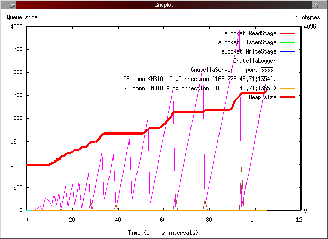
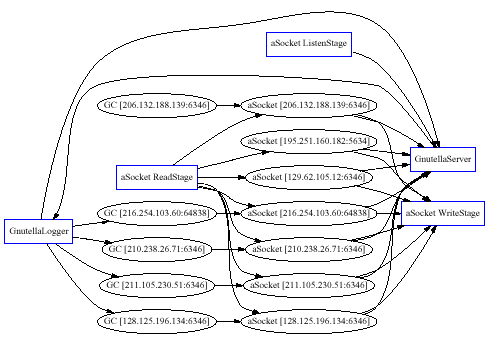

<html><head>
<title>Sandstorm Tutorial and User's Guide</title>
</head>

<body bgcolor="#f8f8ff" link="#005BB7" vlink="#005BB7">

<p>
<table border=0 hspace=4 cellspacing=2 width="100%" cellpadding=3>
<tr bgcolor="#d0d0f0">
<td width="100%">
<a href="sandstorm.jpg">

</a>

<p>
<font face="tahoma,arial,helvetica"><b><big><big>
Sandstorm Tutorial and User's Guide
</big></big></b>
<p>
<P>

<a href="http://www.cs.berkeley.edu/~mdw">Matt Welsh</a>,
<a href="mailto:mdw@cs.berkeley.edu">mdw@cs.berkeley.edu</a><br>
Last updated 11 July 2002
</font>

</td></tr>
</table>

<p>
[<b><a href="index.html">Back to SEDA Release Documentation</a></b>]


<p>
<table border=0 hspace=4 cellspacing=2 width="100%" cellpadding=3>
<tr bgcolor="#e0e0e8">
<td width="100%"><nobr><b><font
face="arial,helvetica">Introduction</font></b></nobr></td>
</tr></table>

<p>
This is an installation and user's guide for <b>Sandstorm</b>,
a Java-based platform for highly-concurrent server applications.
Sandstorm is the main software component of the 
<a href="http://www.cs.berkeley.edu/~mdw/proj/seda/">Staged 
Event-Driven Architecture (SEDA)</a> project.

<p>
Sandstorm's goal is to support server applications which demand massive 
concurrency (on the order of tens of thousands of simultaneous client 
connections), and to behave well under huge variations in load. 
In the <em>staged event-driven architecture</em> (SEDA), upon which Sandstorm is based, an Internet service is decomposed into a set of 
<em>stages</em> connected by <em>queues</em>. This design
avoids the high overhead associated with thread-based concurrency
models, and decouples event and thread scheduling from application logic.
SEDA enables services to be well-conditioned to load, preventing
resources from being overcommitted when demand exceeds service capacity.
Decomposing services into a set of stages also enables modularity and
code reuse, as well as the development of debugging tools for complex
event-driven applications.

<p>
<table border=0 hspace=4 cellspacing=2 width="100%" cellpadding=3>
<tr bgcolor="#e0e0e8">
<td width="100%"><nobr><b><font
face="arial,helvetica">Requirements</font></b></nobr></td>
</tr></table>

<p>
Sandstorm is implemented in Java and has been tested primarily on Linux
systems running the IBM JDK 1.1.8 and 1.3, as well as Sun JDK 1.3 and 1.4. 
Note that despite using Java, we have found the performance of Sandstorm
to match or surpass that of systems built in C/C++ -- see the
SEDA <a href="http://www.cs.berkeley.edu/~mdw/proj/seda/">project
pages</a> for more details.

<p>
Sandstorm should work on most operating systems and JVMs, provided that
two basic facilities are available: native threads (as opposed to
the now-outdated "green threads", which are no longer supported by most
JVMs anyway), and native nonblocking I/O support. Nonblocking I/O can
be provided in one of two ways: using either JDK 1.4 (which provides
nonblocking I/O through the <tt>java.nio</tt> package), or using our own
<a href="nbio.html">NBIO</a> package, which is included in the SEDA
software release. NBIO provides nonblocking I/O for a wide range of UNIX and
Win2k JVMs, and is the precursor to JDK 1.4's <tt>java.nio</tt> 
library.

<p>Note that NBIO requires native
threads --- <em>not</em> "green threads" --- because of interactions
between nonblocking I/O and the JVM's thread management. When using
Sandstorm and nonblocking I/O, you should be able to write applications 
with a very small number of threads, so the scalability limits of some 
native threads packages (e.g., under Linux) should not be a problem.

<p> 
If you wish to use NBIO with Sandstorm, please read the
<a href="nbio.html">NBIO release documentation</a> for compilation 
instructions for that package. Note that Sandstorm is compiled and 
configured to use NBIO by default; if you wish to use JDK 1.4 
instead, <a href="#nio">see below</a>.

<p>
The use of nonblocking I/O is vital for obtaining good performance and 
high concurrency. Sandstorm does <em>not</em> support "threadpool" 
emulations of nonblocking socket I/O, and I have no plans to do so. I have
<a href="http://www.cs.berkeley.edu/~mdw/proj/sandstorm/iocore-bench/">demonstrated</a> that emulation of nonblocking I/O using threads does not scale 
beyond a few hundred socket connections. 
The Sandstorm disk layer currently uses a threadpool model, because 
nonblocking file I/O is not supported by most operating systems.

<p>
<table border=0 hspace=4 cellspacing=2 width="100%" cellpadding=3>
<tr bgcolor="#e0e0e8">
<td width="100%"><nobr><b><font
face="arial,helvetica">Setup and Compilation</font></b></nobr></td>
</tr></table>

<p>
All of the SEDA code is in the top-level Java package <tt>seda</tt>.
Sandstorm is in the package <tt>seda.sandStorm</tt>, and NBIO is in
<tt>seda.nbio</tt>.

To compile or use the Sandstorm software, you need to configure the
following environment variables:

<ol>
<li> Be sure that your <tt>CLASSPATH</tt> contains the following two
     entries:
  <ul>
  <li> The "<tt>seda/src</tt>" directory in the SEDA release;
  <li> The "<tt>.</tt>" directory
  </ul>

<p>
For example, under Bourne-style UNIX shells, type:
<pre>
  CLASSPATH=$CLASSPATH:/path/to/seda/src:.
  export CLASSPATH
</pre>
Under C-style shells:
<pre>
  setenv CLASSPATH "$CLASSPATH":/path/to/seda/src:.
</pre>
Replacing <tt>/path/to/seda</tt> with the directory where you unpacked
the SEDA release.

<p>
<li> If you are using NBIO, be sure that your 
<tt>LD_LIBRARY_PATH</tt> contains the "<tt>seda/lib</tt>" 
directory in the SEDA release. This is necessary for the JVM to locate
the NBIO native libraries. If you are using JDK 1.4 instead of NBIO,
you can skip this step.

<p>Under Bourne-style shells,
<pre>
  LD_LIBRARY_PATH=$LD_LIBRARY_PATH:/path/to/seda/lib
  export LD_LIBRARY_PATH
</pre>
Under C-style shells,
<pre>
  setenv LD_LIBRARY_PATH "$LD_LIBRARY_PATH":/path/to/seda/lib
</pre>

<p>
<li> Place <tt>seda/bin</tt> on your PATH. This directory contains the
<tt>sandstorm</tt> script for starting the Sandstorm runtime, as well as
other tools.

<p>Under Bourne-style shells,
<pre>
  PATH=$PATH:/path/to/seda/bin
  export PATH
</pre>
Under C-style shells,
<pre>
  setenv PATH "$PATH":/path/to/seda/bin
</pre>
</ol>

<b>Building the code and Javadoc documentation</b>

<p>
To compile all of the code in the SEDA tree, including NBIO, Sandstorm, 
and related utility code, simply <tt>cd</tt> to the <tt>seda/src/seda</tt> 
directory and type <tt>make</tt>. If there are any problems with 
compilation, be absolutely sure that <tt>seda/src</tt> and "<tt>.</tt>" 
are in fact on your <tt>CLASSPATH</tt>. This is the most common 
problem when building the code.

<p>
To build the Javadoc documentation for the SEDA tree, <tt>cd</tt> to 
<tt>seda/docs/javadoc</tt> and type <tt>make</tt>. You can then browse
the Javadocs by pointing your browser at 
<a href="javadoc/index.html">javadoc/index.html</a>.

<p>
<table border=0 hspace=4 cellspacing=2 width="100%" cellpadding=3>
<tr bgcolor="#e0e0e8">
<td width="100%"><nobr><b><font
face="arial,helvetica">Testing</font></b></nobr></td>
</tr></table>

<p>
You can now test the installation by changing to the
<tt>seda/src/sandStorm/test/basic</tt> directory and running:
<pre>
  sandstorm sandstorm.cfg
</pre>
You should see output resembling the following:
<p>
<center>
<table border=0 hspace=4 cellspacing=2 width="80%" cellpadding=3>
<tr bgcolor="#e0e0f0">
<td width="100%">
<pre>
Sandstorm v2.2 <mdw@cs.berkeley.edu>
  Starting at Thu Mar 14 15:14:10 PST 2002

ThreadPoolController: Started, delay 2000 ms, threshold 1000, autoMaxDetect false
Sandstorm: Starting aSocket layer
aSocket layer using JDK1.4 java.nio package
SelectSource created, do_balance = true
TP &lt;aSocket ReadStage&gt;: Adding 1 threads to pool, size 1
TP &lt;aSocket ReadStage&gt;: Starting 1 threads, maxBatch=-1
SelectSource created, do_balance = true
TP &lt;aSocket ListenStage&gt;: Adding 1 threads to pool, size 1
TP &lt;aSocket ListenStage&gt;: Starting 1 threads, maxBatch=-1
SelectSource created, do_balance = true
TP &lt;aSocket WriteStage&gt;: Adding 1 threads to pool, size 1
TP &lt;aSocket WriteStage&gt;: Starting 1 threads, maxBatch=-1
Sandstorm: Starting aDisk layer
ThreadPoolController: Started, delay 2000 ms, threshold 20, autoMaxDetect false
TP &lt;AFileTPTM Stage&gt;: Adding 1 threads to pool, size 1
TP &lt;AFileTPTM Stage&gt;: Starting 1 threads, maxBatch=-1
Sandstorm: Loaded GenStage1 from GenericHandler
Sandstorm: Loaded SinkStage from DevNullHandler
Sandstorm: Loaded TimerStage from TimerHandler
Sandstorm: Initializing stages
-- Initializing &lt;GenStage1&gt;
sleep=100
TP <GenStage1>: initial 1, min 1, max 10, blockTime 1000, idleTime 1000
TP <GenStage1>: Adding 1 threads to pool, size 1
TP <GenStage1>: Starting 1 threads, maxBatch=-1
-- Initializing &lt;SinkStage&gt;
Started
TP <SinkStage>: initial 1, min 1, max 10, blockTime 1000, idleTime 1000
TP <SinkStage>: Adding 1 threads to pool, size 1
TP <SinkStage>: Starting 1 threads, maxBatch=-1
-- Initializing &lt;TimerStage&gt;
delay=500
TP <TimerStage>: initial 1, min 1, max 10, blockTime 1000, idleTime 1000
TP <TimerStage>: Adding 1 threads to pool, size 1
TP <TimerStage>: Starting 1 threads, maxBatch=-1
Sandstorm: Waiting for all components to start...
TimerHandler: GOT QEL: seda.sandStorm.core.BufferElement@b1f2275
GenericHandler: GOT QEL: seda.sandStorm.core.BufferElement@b1f2275

Sandstorm: Ready.

DevNullHandler: GOT QEL: seda.sandStorm.core.BufferElement@b1f2275
TimerHandler: GOT QEL: seda.sandStorm.core.BufferElement@b1f2275
GenericHandler: GOT QEL: seda.sandStorm.core.BufferElement@b1f2275
DevNullHandler: GOT QEL: seda.sandStorm.core.BufferElement@b1f2275
</pre>
</td>
</tr></table>
</center>

<p>
If any exceptions are thrown or other error messages are displayed,
then something is wrong; you should try to track these down yourself
or <a href="mailto:mdw@cs.berkeley.edu">contact me</a>.

<a name="nio">
<p>
<table border=0 hspace=4 cellspacing=2 width="100%" cellpadding=3>
<tr bgcolor="#e0e0e8">
<td width="100%"><nobr><b><font
face="arial,helvetica">Support for JDK 1.4 java.nio</font></b></nobr></td>
</tr></table>

<p>
Sandstorm supports nonblocking I/O using either NBIO or 
JDK 1.4's <tt>java.nio</tt> package. By default Sandstorm is compiled
and configured to use NBIO; to use <tt>java.nio</tt> follow the
instructions here.

<ol>
<p>
<li>
First, edit <tt>seda/src/seda/sandStorm/lib/aSocket/Makefile</tt> and change the
line
<pre>
   SUBDIRS = nbio test
</pre>
to
<pre>
   SUBDIRS = nio test
</pre>

<p>
You should be able to type <tt>make</tt> in the <tt>seda/src</tt> directory
to rebuild your Sandstorm tree with <tt>java.nio</tt> support enabled. 
(Note that you are welcome to compile both NBIO and <tt>java.nio</tt> 
support into your tree; you can select which library to use at runtime 
as described in the next step.)

<p>
<li>
To enable <tt>java.nio</tt> support, be sure your Sandstorm
configuration file (<tt>sandstorm.cfg</tt>) includes the lines
<pre>
&lt;global&gt;
   &lt;aSocket&gt;
     provider NIO
   &lt;/aSocket&gt;
&lt;/global&gt;
</pre>
(That is, add the <tt>provider NIO</tt> line to the
<tt>&lt;aSocket&gt;</tt> section of the file.)

<p>
You can reenable NBIO support simply by changing this line to
<pre>
     provider NBIO
</pre>
</ol>

<p>
When Sandstorm starts, one of the first lines it displays should
indicate whether NBIO or <tt>java.nio</tt> is being used.

<p>
<table border=0 hspace=4 cellspacing=2 width="100%" cellpadding=3>
<tr bgcolor="#e0e0e8">
<td width="100%"><nobr><b><font
face="arial,helvetica">Sandstorm Programming API</font></b></nobr></td>
</tr></table>

<p>
This section discusses the basic programming interfaces used by 
Sandstorm applications. Consult the
<a href="javadoc/packages.html">Javadoc
API documentation</a> for Sandstorm for more details on the specific APIs.
(This documentation is generated as part of the build process for
Sandstorm; if you have not yet compiled the code, you can get it from the Web at <a href="http://www.cs.berkeley.edu/~mdw/proj/sandstorm/javadoc">this link</a>.)
Most of the application-level APIs are in the package 
<tt>seda.sandStorm.api</tt>.

<p><b>Stages and Event Handlers</b>

<p>
Sandstorm applications are constructed as a set of <em>stages</em>
connected by <em>event queues</em>. Threads are used to drive stage
execution. However, the programming model hides the details of 
stages, queues, and threads from the application. The only component
that the application implements is a set of <em>event handlers</em>.
An event handler implements the core event-handling logic of a stage.
Therefore an event handler is the application-level code which is 
"embedded" in a stage.

<p>
An event handler (represented by the interface <tt>EventHandlerIF</tt>)
implements the following set of methods:
<pre>
  public void handleEvent(QueueElementIF elem) 
        throws EventHandlerException;

  public void handleEvents(QueueElementIF elemarr[])
        throws EventHandlerException;

  public void init(ConfigDataIF config) throws Exception;

  public void destroy() throws Exception;
</pre>

<p>
A <tt>QueueElementIF</tt> is the basic representation of an event;
it is an empty interface which the application provides implementations
of to represent different events in the system.

<p><tt>handleEvent</tt> and <tt>handleEvents</tt> are the basic
event-handling code. These two methods are invoked by the runtime when events
are pending for a stage. <tt>init</tt> and <tt>destroy</tt> are used
for initialization and cleanup, respectively.

<p>
Note that event handlers do not directly manage threads or consume 
events from their incoming event queue. This is a deliberate design
decision, which decouples the details of thread and queue management
from the application logic. The runtime is responsible for allocating
and scheduling threads, performing queue operations, and so forth.

<p><b>Event queues, SinkIF, and StageIF</b>

<p>Each stage has one or more associated event queues, but only one
event handler which processes events from those queues. As stated above,
an event handler does not directly dequeue events from its incoming 
event queues; rather, the runtime system manages this and invokes
the handler's <tt>handleEvent</tt> or <tt>handleEvents</tt> method
with the pending events.

<p>
An event queue is represented by two ends -- a "source" and a "sink".
The source allows dequeue operations and is only visible to the 
Sandstorm internals. The sink allows enqueue operations, and is visible
to event handlers which wish to deliver events to a given stage.
The event sink is represented by the class <tt>SinkIF</tt>, which
supports various enqueue operations:
<tt>enqueue</tt>, <tt>enqueue_many</tt>, and <tt>enqueue_lossy</tt>
The first two methods allow one or more events to be pushed onto
the queue. These methods may throw an exception if the sink is full, or
if it is no longer being serviced (i.e. the sink is "closed"). 
<tt>enqueue_lossy</tt> allows events to be enqueued, but does 
not throw an exception; rather, the events are dropped if the sink 
is full or closed. <tt>SinkIF</tt> also supports operations which
return the number of pending events on the queue, as well as a
"split-phase" enqueue operation. See the <a href="javadoc/packages.html">Javadocs</a>
for details.

<p>
An event handler communicates with another stage by obtaining a handle
to that stage's <tt>StageIF</tt>. This is accomplished through the
<tt>ManagerIF</tt> interface, which is passed in as part of the
<tt>ConfigDataIF</tt> to the event handler's <tt>init</tt> method.
The <tt>StageIF</tt> allows an event handler to get a handle to that
stage's <tt>SinkIF</tt>. Note that a stage may have more than one
<tt>SinkIF</tt> associated with it; this is to support differentiated
event queues of various kinds. For the most part applications make use
of the "main" <tt>SinkIF</tt> associated with a stage.

<p><b>Event Handler Example</b>

<p>
Here is the code for a very simple event handler which prints a
message for every received event, and passes the event along to
another stage:
<p>
<center>
<table border=0 hspace=4 cellspacing=2 width="80%" cellpadding=3>
<tr bgcolor="#e0e0f0">
<td width="100%">
<pre>
  import seda.sandStorm.api.*;

  public class printEventHandler implements EventHandlerIF {

    private SinkIF nextStageSink;

    public void init(ConfigDataIF config) throws Exception {
      
      // Get system manager
      ManagerIF mgr = config.getManager();

      // Get stage with name "nextStage"
      StageIF nextStage = mgr.getStage("nextStage");

      // Get nextStage's event sink
      nextStageSink = nextStage.getSink();

      System.err.println("printEventHandler initialized");
    }

    public void destroy() {
      System.err.println("printEventHandler shutting down");
    }

    public void handleEvent(QueueElementIF elem) 
      throws EventHandlerException {

      System.err.println("printEventHandler: Got event "+elem);

      // Pass the event along
      nextStageSink.enqueue(elem);
    }

    public void handleEvents(QueueElementIF elemarr[]) 
      throws EventHandlerException {

      // Just call handleEvent in FIFO order
      for (int i = 0; i &lt; elemarr.length; i++) {
        handleEvent(elemarr[i]);
      }
    }
  }
</pre>
</td>
</tr></table>
</center>

<p>
<table border=0 hspace=4 cellspacing=2 width="100%" cellpadding=3>
<tr bgcolor="#e0e0e8">
<td width="100%"><nobr><b><font
face="arial,helvetica">Threading and Concurrency Issues</font></b></nobr></td>
</tr></table>

<p>
Each stage contains a thread pool (hidden from the application)
that processes events from the stage's incoming event queue.
The pool contains 1 thread by default, but the thread pool sizing
controller will grow and shrink the thread pool based on demand.
See <a href="#sizeController">below</a> for information on 
configuring the parameters of the thread pool size controller.

<p>
Essentially this means that multiple threads may be executing a
stage's event handler at once, so you need to be aware of
synchronization and concurrency issues within an event handler.
Any global data structures should be protected using 
the standard Java <tt>synchronized</tt> primitive. You may also
make the entire <tt>handleEvent()</tt> or <tt>handleEvents()</tt>
methods synchronized, however, this will prevent multiple threads from
executing within your event handler at once (limiting parallelism and
performance). In addition, multiple event handlers may be executing
simultaneously, so if several stages share a common data structure, you
must use <tt>synchronized</tt> to access them as well.

<p>
In general these concurrency issues are not difficult to work around,
and are much simpler than if implementing a thread-per-request style of
concurrency (since synchronization is typically limited within each 
stage). However, if your stage code is much too complex and you wish to
force only one thread to execute within it, you have three options:
<ol>
<li> Make the <tt>handleEvent()</tt> and/or <tt>handleEvents()</tt>
methods <tt>synchronized</tt>. This approach is <b>not recommended</b>,
as the thread pool sizing controller may allocate multiple threads to
your stage without realizing that only one can execute at a time.

<li> Edit the Sandstorm configuration file to limit the thread pool to a
single thread for that stage; <a href="#sizeController">see below</a>
for details. This is also not recommended as it is possible to create
stages at runtime for which the thread pool controller parameters have
not been specified in the configuration file. 

<li> The preferred method is to have the event handler class implement
<tt>SingleThreadedEventHandlerIF</tt> in addition to
<tt>EventHandlerIF</tt>. This is an empty interface that indicates to
the Sandstorm runtime that the stage should not be allocated more than 1
thread.
</ol>

<p>
A related concurrency issue arises when there are multiple threads in a
stage and some ordering constraint on the events being processed by the
stage. Say you have events A, B, and C that must be processed in that
order. If A, B, and C are dispatched to separate threads they could be
processed in any order. In general you will have to solve this problem
yourself, that is, create the appropriate synchronization primitives to
ensure this ordering (such as a shared queue of events that threads pull
from in the "right order"). 

<p>
This issue comes up most commonly in the context of processing incoming
data on a TCP socket, using the <em>aSocket</em> library described
below. To ensure that your stages process incoming TCP packets in the
correct order, each <tt>aTcpInPacket</tt> event has an associated
sequence number field that is incremented for each packet received on a
connection - you can use this field to reorder the packets for processing.
<tt>aSocketInputStream</tt> is a convenience class that automatically
reorders incoming TCP packets and represents them as a stream of 
contiguous bytes to simplify packet processing.

<p>
<table border=0 hspace=4 cellspacing=2 width="100%" cellpadding=3>
<tr bgcolor="#e0e0e8">
<td width="100%"><nobr><b><font
face="arial,helvetica">Asynchronous Sockets</font></b></nobr></td>
</tr></table>

<p>
The package <tt>seda.sandStorm.lib.aSocket</tt>
provides an asynchronous socket communication facility for 
Sandstorm applications. This is very similar to the original
<tt>ninja2.core.io_core.aSocket</tt> API, if you are familiar
with that. You should use the Sandstorm version of this library,
not the original "io_core" version (the former is integrated into
Sandstorm's runtime system and has better performance).
This library supports both TCP (stream-based) sockets, UDP (datagram)
sockets, and multicast UDP sockets.

<p>An application creates an outgoing socket connection by creating 
an <tt>ATcpClientSocket</tt>, providing the hostname, port number,
and <tt>SinkIF</tt> for the stage requesting the connection. When the
connection is established a <tt>ATcpConnection</tt> object is pushed
to the given <tt>SinkIF</tt>. To send new packets over the connection,
the application enqueues a <tt>BufferElement</tt> to the 
<tt>ATcpConnection</tt> object. (A <tt>BufferElement</tt> is just a
wrapper for a byte array.)  When new packets are received, 
an <tt>ATcpInPacket</tt> object is pushed to the application; this
contains a <tt>BufferElement</tt> with the contents of the packet, 
a pointer to the <tt>ATcpConnection</tt> from which the packet was received,
and a sequence number that indicates what order the packet was received
on the connection.

<p>
Server sockets are created by instantiating an 
<tt>ATcpServerSocket</tt>, which pushes incoming connections
(as <tt>ATcpConnections</tt> objects) to the application. 

<p> 
The classes for UDP and multicast UDP sockets are similar in structure,
and are called <tt>AUdpSocket</tt> and <tt>AMcastSocket</tt>,
respectively.

<p>
<table border=0 hspace=4 cellspacing=2 width="100%" cellpadding=3>
<tr bgcolor="#e0e0e8">
<td width="100%"><nobr><b><font
face="arial,helvetica">Asynchronous Files</font></b></nobr></td>
</tr></table>

<p>
The package <tt>seda.sandStorm.lib.aDisk</tt>
provides an asynchronous file library. The primary way to access
this mechanism is to create an object of type <tt>AFile</tt>;
you can enqueue I/O requests to the file through its 
<tt>read</tt>, <tt>write</tt>, and <tt>seek</tt> methods.
When the I/O operations complete, <tt>AFileIOCompleted</tt>
events are pushed to the client's <tt>SinkIF</tt>. 

<p>
The current implementation makes use of blocking file I/O and
a small thread pool; however, we are currently working on a
true asynchronous implementation using the POSIX.4 AIO mechanism.

<p>
See the Javadoc documentation for this library for more detail.

<p>
<table border=0 hspace=4 cellspacing=2 width="100%" cellpadding=3>
<tr bgcolor="#e0e0e8">
<td width="100%"><nobr><b><font
face="arial,helvetica">Timers</font></b></nobr></td>
</tr></table>

<p>
An application can request that events be delivered to a <tt>SinkIF</tt>
at some time in the future using the 
<tt>seda.sandStorm.core.ssTimer</tt> library. This class 
supports <tt>registerEvent</tt> and <tt>cancelEvent</tt> calls and is 
fairly self-explanatory.

<p>
<table border=0 hspace=4 cellspacing=2 width="100%" cellpadding=3>
<tr bgcolor="#e0e0e8">
<td width="100%"><nobr><b><font
face="arial,helvetica">Other Libraries</font></b></nobr></td>
</tr></table>

<p>
Other useful libraries are provided in the <tt>sandStorm/lib</tt>
directory. The <tt>seda.sandStorm.lib.http</tt>
package provides an asynchronous HTTP protocol implementation based on
aSocket. Likewise, <tt>seda.sandStorm.lib.Gnutella</tt> 
provides a <a href="http://gnutella.wego.com">Gnutella</a> protocol 
implementation. In the <tt>test</tt> directory within these two packages
you will find simple HTTP and Gnutella servers implemented using these
libraries; the Javadoc documentation also makes it clear how to use them.
</td>


<a name="configfile"></a>
<p>
<table border=0 hspace=4 cellspacing=2 width="100%" cellpadding=3>
<tr bgcolor="#e0e0e8">
<td width="100%"><nobr><b><font
face="arial,helvetica">Sandstorm Configuration File</font></b></nobr></td>
</tr></table>

<p>
The Sandstorm configuration file (usually called <tt>sandstorm.cfg</tt>)
uses an XML-like format, consisting of nested sections delimited by
tags of the form 
<pre>
  &lt;sectionName&gt; ... &lt;/sectionName&gt;
</pre>
The exact contents of this file are bound to change in future Sandstorm
releases, but the basic format should remain the same. 

<p>
The file <tt>test/basic/sandstorm.cfg</tt> provides an example Sandstorm
configuration file. Note that this file contains the complete set of
options in order to document their use, but in general a config file
should only contain those options which you need to specify. A simple
configuration file is shown below:

<p>
<p>
<center>
<table border=0 hspace=4 cellspacing=2 width="80%" cellpadding=3>
<tr bgcolor="#e0e0f0">
<td width="100%">
<pre>
# Example Sandstorm configuration file
&lt;sandstorm&gt;

  &lt;stages&gt;

    &lt;firstStage&gt;
      class seda.test.firstStageHandler
      &lt;initargs&gt;
        somearg1 somevalue1
        somearg2 somevalue2
      &lt;/initargs&gt;
    &lt;/firstStage&gt;

    &lt;secondStage&gt;
      class seda.test.secondStageHandler
    &lt;/secondStage&gt;

  &lt;/stages&gt;

  &lt;!include options.cfg&gt;

&lt;/sandstorm&gt;
</pre>
</td>
</tr></table>
</center>

<p>
Comments are started by <tt>#</tt> characters and extend to the end of
the line. Files may be included (nested includes are supported) using
the <tt>&lt;!include filename&gt;</tt> directive.

<p>
The main section of the file must be named 
<tt>&lt;sandstorm&gt;</tt>, and consists of a
<tt>&lt;stages&gt;</tt> which contains one subsection per stage. 
There is also a <tt>&lt;global&gt;</tt> section 
used for defining global options; see <a href="#global">below</a>. 
The contents of each section consist of key-value pairs of the format
<pre>
  key1 value1
  key2 value2
  ...
  keyN valueN
</pre>
where <tt>key</tt> is a single (whitespace-delimted) word and
<tt>value</tt> is an arbitrary string which may contain whitespace.
The <tt>value</tt> field extends to the end of the line.


<p>
<b>&lt;stage&gt; sections</b>

<p>
Each subsection of the <tt>&lt;stage&gt;</tt> section is formatted
as follows:

<p>
<dl>
<dt> <tt>&lt;</tt><font color=red>stage-name</font><tt>&gt;</tt>
<dd> 
Specifies the name of the stage as it will be registered in the
system. This name is used to perform stage lookups through the 
<tt>ManagerIF</tt> interface.

<p>
<dt> <tt>class</tt> <font color=red>class-name</font>
<dd> <b>(Mandatory)</b>
Specifies the fully-qualified class name of the stage's event
handler.

<p>
<dt> <tt>queueThreshold</tt> <font color=red>value</font>
<dd><b>(Optional)</b>
Specifies the threshold for this stage's incoming event queue.
<font color=red>value</font> must be a positive integer.
If the event queue reaches this threshold then new entries cannot be
enqueued onto it; a <tt>SinkFullException</tt> will be thrown instead.
This field is optional; the default value is -1, which indicates an 
infinite event queue threshold.

<p>
<dt> <tt>&lt;initargs&gt;</tt> <font color=red>arguments</font> <tt>&lt;/initargs&gt;</tt>
<dd><b>(Optional)</b>
The <tt>&lt;initargs&gt;</tt> subsection contains the initial
arguments passed to the event handler's <tt>init()</tt> method. It
consists of a set of key-value pairs which the event handler accesses
through the <tt>ConfigDataIF</tt> interface. The initargs are optional.
<p>
The initialization arguments for each stage are derived from three
different sources. In order of precedence, they are:
<ol>
<li> Arguments passed on the <tt>sandstorm</tt> command line;
<li> Arguments contained in the <tt>&lt;initargs&gt;</tt> subsection
for the corresponding <tt>&lt;stage&gt;</tt>; and
<li> Arguments contained in the <tt>&lt;initargs&gt;</tt> subsection
in the  <tt>&lt;global&gt;</tt> section of the configuration file.
</ol>
This precedence order allows you to, say, override any initialization
arguments directly on the command line, while providing defaults in the
configuration file.
</dl>

<a name="global"></a>
<p>
<b>&lt;global&gt; section</b>

<p>
The config file may also contain a <tt>&lt;global&gt;</tt> section
which defines global options. This section is optional and in general
should not be used by applications; the default values should be
acceptable. If you wish to use it, however, here is the format:

<p>
<dl>
<dt> <tt>&lt;initargs&gt;</tt> <font color=red>arguments</font> <tt>&lt;/initargs&gt;</tt>
<dd><b>(Optional)</b>
Contains initial arguments passed to every stage in the application.
If the stage has its own <tt>&lt;initargs&gt;</tt> section, that will
override the global initargs specified here.

<p>
<a name="sizeController">
<dt> <tt>&lt;threadPool&gt;</tt> <font color=red>options</font> <tt>&lt;/threadPool&gt;</tt>
<dd> <b>(Optional)</b> Defines options for thread pool management.
These options are:

  <p>
  <dl>
  <dt> <tt>&lt;sizeController&gt;</tt> <font color=red>options</font> <tt>&lt;/sizeController&gt;</tt>
  <dd> <b>(Optional)</b> Defines options for the thread pool sizing
  controller. These options are:

   <p>
   <dl>
   <dt> <tt>enable</tt> <font color=red>boolean</font>
   <dd> <b>(Optional)</b> 
     Enable or disable the sizing controller, which resizes stage
     thread pools when the stage's incoming event queue reaches some
     threshold. The thread governor automatically
     allocates threads based on its observation of load against a stage
     in an attempt to avoid overload conditions. 
     The value of <font color=red>boolean</font> must be <tt>true</tt> or 
     <tt>false</tt>. Default is false.

   <p>
   <dt> <tt>threshold</tt> <font color=red>value</font>
   <dd> <b>(Optional)</b> Specifies the queue threshold which triggers
   a thread being added by the controller. Default is 1000.
   
   <p>
   <dt> <tt>delay</tt> <font color=red>delay</font>
   <dd> <b>(Optional)</b> Specifies the sampling delay (in milliseconds)
   for the controller. Default is 2000 ms. 

   <p>
   <dt> <tt>idleTimeThreshold</tt> <font color=red>delay</font>
   <dd> <b>(Optional)</b> Specifies the idle time which causes a thread
   to be removed from the pool. Default is 1000 ms. 
   </dl>

   <p>
   <dt> <tt>maxThreads</tt> <font color=red>value</font>
   <dd> <b>(Optional)</b> Specifies the maximum number of threads in
   a thread pool. Default is 20.

   <p>
   <dt> <tt>minThreads</tt> <font color=red>value</font>
   <dd> <b>(Optional)</b> Specifies the minimum number of threads in
   a thread pool. Default is 1.

   <p>
   <dt> <tt>initialThreads</tt> <font color=red>value</font>
   <dd> <b>(Optional)</b> Specifies the initial number of threads in
   a thread pool. Default is 1.

   <p>
   <dt> <tt>blockTime</tt> <font color=red>value</font>
   <dd> <b>(Optional)</b> Specifies the time which each thread blocks
   waiting for events to arrive. Default is 1000 ms.

   </dl>

<p>
<dt> <tt>&lt;profile&gt;</tt> <font color=red>options</font> <tt>&lt;/profile&gt;</tt>
<dd> <b>(Optional)</b> Defines options for the Sandstorm profiler.
These options are:

  <dl>
  <p>
  <dt> <tt>enable</tt> <font color=red>boolean</font> 
  <dd> <b>(Optional)</b> Specifies whether the Sandstorm system profiler
  should be enabled. The profiler generates a log file containing
  measurements of event queue lengths and memory usage in the system.
  See <a href="#profiler">Using the profiler</a>, below, for more details.
  <font color=red>boolean</font> must be <tt>true</tt> or <tt>false</tt>;
  the default value is <tt>false</tt>. Use of the
  <tt>-profile</tt> option on the <tt>sandstorm</tt> command line
  overrides this value (if set) to <tt>true</tt>.

  <p>
  <dt> <tt>delay</tt> <font color=red>value</font>
  <dd> <b>(Optional)</b> Specifies the sampling delay (in milliseconds) 
  for the profiler. Default is 1000 ms.

  <p>
  <dt> <tt>filename</tt> <font color=red>value</font>
  <dd> <b>(Optional)</b> Specifies the filename which the profile will
  be written to. Default is <tt>./sandstorm-profile.txt</tt>.

  <p>
  <dt> <tt>graph</tt> <font color=red>boolean</font>
  <dd> <b>(Optional)</b> Specifies whether the profile should
  generate a graph of stage connectivity during runtime. Default value
  is <tt>false</tt>.

  <p>
  <dt> <tt>sockets</tt> <font color=red>boolean</font>
  <dd> <b>(Optional)</b> Specifies whether the outgoing queue length
  for sockets should be included in the profile. Default value is 
  <tt>false</tt>.
  </dl>
</dl>

<p>
The programmatic interface for configuring the Sandstorm system is given
by the class <tt>seda.sandStorm.main.SandstormConfig</tt>. This class
allows the system to manipulate arbitrary key/value pairs (where both
key and value are specified as strings, but may be converted to and from
booleans, ints, and doubles as well). See the source code for this class
to understand how configuration options are specifed and used by the
runtime.

<p>
<table border=0 hspace=4 cellspacing=2 width="100%" cellpadding=3>
<tr bgcolor="#e0e0e8">
<td width="100%"><nobr><b><font
face="arial,helvetica">Running Sandstorm</font></b></nobr></td>
</tr></table>

<p>
The basic way to run Sandstorm is to use the <tt>sandstorm</tt>
script, found in the <tt>seda/bin</tt> directory. This script uses 
the following syntax:
<pre>
  sandstorm [-profile] &lt;configfile&gt; [initargs ...]
</pre>
where <tt>configfile</tt> is the name of the Sandstorm configuration
file (described in detail <a href="#configfile">below</a>). 
Use of the <tt>-profile</tt> option turns on the Sandstorm
profiler (also described <a href="#profiler">below</a>), and 
overrides the <tt>profile</tt> option (if any) in the configuration file.

<p>
Any setting in the configuration file can be overridden using
command-line arguments when you run <tt>sandstorm</tt>. 
These are of the form <tt>name=value</tt> and are specified on the
command line after the configuration file name. For example,
<pre>
  sandstorm myconfiguration.cfg global.threadPool.minThreads=2
</pre>
sets the <tt>global.threadPool.minThreads</tt> parameter to 2,
regardless of its setting in the configuration file. 

<p>
If you specify a command-line argument name that does not contain a 
dot (<tt>.</tt>), it will be passed as an initialization argument
to every stage, as if it were specified in the <tt>&lt;initargs&gt;</tt>
subsection of every &lt;stage&gt; section. For example,
<pre>
  sandstorm myconfiguration.cfg foo=bar
</pre>
sets the initialization parameter named <tt>foo</tt> to the value
<tt>bar</tt> for every stage; stages can retrieve this value by
calling <tt>ConfigDataIF.getString()</tt>.

<p>
In addition to invoking Sandstorm from the command line, it is possible
to embed Sandstorm in another Java application; 
<a href="#embedding">see below for details</a>.

<a name="profiler"></a>
<p>
<table border=0 hspace=4 cellspacing=2 width="100%" cellpadding=3>
<tr bgcolor="#e0e0e8">
<td width="100%"><nobr><b><font
face="arial,helvetica">Other Features</font></b></nobr></td>
</tr></table>

<p>
There are many other features in Sandstorm that we haven't documented
here, including queue admission controllers, adaptive response time
controllers, the batching controller, and so forth. Most of these
features are not important for simple application development, but you
may wish you use them to condition your sevice to heavy load. 
Each stage's event queue can have an associated admission control
algorithm that determines whether an event is accepted or not; 
admission controllers implementing simple thresholding and token-bucket
rate limiting are provided. Several response time controllers are
provided to tune admission control parameters to meet a response time
target. All of this code and associated interfaces are easily  
discovered in the <tt>seda/sandStorm/internal</tt> directory.

<a name="profiler"></a>
<p>
<table border=0 hspace=4 cellspacing=2 width="100%" cellpadding=3>
<tr bgcolor="#e0e0e8">
<td width="100%"><nobr><b><font
face="arial,helvetica">Using the Profiler</font></b></nobr></td>
</tr></table>

<p>
The Sandstorm profiler is extremely valuable for understanding the
performance of applications, and for identifiying bottlenecks.
When enabled (by setting <tt>profile true</tt> in the
<tt>&lt;global&gt;</tt> section of the configuration file, or by
using the <tt>-profile</tt> option on the <tt>sandstorm</tt> command
line), the profiler samples queue lengths and the Java heap size
every 100 ms and appends a record to the file
<tt>sandstorm-profile.txt</tt> in the current directory. (These 
values can be changed in the configuration file.) 

<p>
If you have <a
href="http://www.cs.dartmouth.edu/gnuplot_info.html">Gnuplot</a>
installed, you can visualize the Sandstorm profiler output by running
the script <tt>ssprofile-graph</tt> in the Sandstorm <tt>bin</tt>
directory; this script takes a single argument which is the name
of the profile logfile. <tt>ssprofile-graph</tt> draws a graph of the
queue lengths and heap size over time. You can edit this script to
customize the output if you like. Here is an example of the display
produced by <tt>ssprofile-graph</tt>:

<p>
<center>
<a href="profile.gif"></a>
<br>
<b>(Click to enlarge)</b>
</center>

<p>
At runtime you can get a handle to the system profiler using
the <tt>ManagerIF.getProfiler()</tt> method. <tt>ProfilerIF</tt> defines
the profiler API. The <tt>add()</tt> method allows you to add an object
to the profiler's queue-length trace; anything which implements
<tt>ProfilableIF</tt> can be profiled in this way., 

<p>
The <tt>addGraphEdge()</tt> and <tt>dumpGraph()</tt> methods allow
the profiler to generate a graph depicting the connectivity between
stages. Calling <tt>addGraphEdge()</tt> adds a pair of nodes to the
graph with a directed edge between them. <tt>dumpGraph</tt> dumps the
graph to an output file which you can visualize using the 
<a href="http://www.research.att.com/sw/tools/graphviz/">graphiviz</a>
tool from AT&amp;T Research. Here is an example graph generated using
this approach:
<p>
<center>
<a href="gnutella-graph.gif"></a>
<br>
<b>(Click to enlarge)</b>
</center>
<p>
This graph has been beautified somewhat by hand, but you get the idea.
Soon I will be packaging up the tools to make this process somewhat more
automatic.

<p>
<a name="embedding">
<table border=0 hspace=4 cellspacing=2 width="100%" cellpadding=3>
<tr bgcolor="#e0e0e8">
<td width="100%"><nobr><b><font
face="arial,helvetica">Embedding Sandstorm</font></b></nobr></td>
</tr></table>

<p>
Sandstorm is designed to be embedded into other applications.
In this way you can create a Sandstorm instance within some other
application and control it programmatically, creating and destroying
stages, and so forth. 

<p> 
To do this, simply create an object of type 
<tt>seda.sandStorm.main.Sandstorm</tt>.
In general you should only create one <tt>Sandstorm</tt> per Java
Virtual Machine, since multiple instances may interfere with one another
in terms of sockets, thread scheduling, and so forth.

<p>
There are three constructors for the <tt>Sandstorm</tt> class:

<dl>
<dt> <tt>public Sandstorm()</tt> 
<dd> Create a Sandstorm with default configuration parameters.

<dt> <tt>public Sandstorm(String filename)</tt> 
<dd> Create a Sandstorm and read the configuration from the given 
filename. This file is simply a Sandstorm configuration file as 
described above.

<dt> <tt>public Sandstorm(SandstormConfig config)</tt> 
<dd> Create a Sandstorm with the configuration parameters specified 
by the given <tt>SandstormConfig</tt> object. See the 
<a href="javadoc/packages.html">Javadocs</a> for details on using 
<tt>SandstormConfig</tt>.
</dl>

<p>
The <tt>Sandstorm</tt> class exports two other methods which you can use
to control the Sandstorm instance from your application:

<p>
<dl>
<dt> <tt>public ManagerIF getManager()</tt> 
<dd> Returns a handle to the <tt>ManagerIF</tt> for this Sandstorm 
instance. This interface allows you to create stages, obtain handles 
to stages, and so forth.

<dt> <tt>public ManagerIF getSystemManager()</tt> o
<dd>Returns a handle to the <tt>SystemManagerIF</tt> for this 
Sandstorm instance. This is a lower-level interface allowing 
both stages and thread managers to be created. It should only be used 
if you need to use a thread manager other than the default.
</dl>

<p>
<table border=0 hspace=4 cellspacing=2 width="100%" cellpadding=3>
<tr bgcolor="#e0e0e8">
<td width="100%"><nobr><b><font
face="arial,helvetica">Sandstorm Programming Style Guide</font></b></nobr></td>
</tr></table>

<p>
A great deal of programming in Sandstorm is a matter of style. I have
tried to design the APIs to encourage a particular way of doing things,
and to discourage "abuses" of Java functionality which can lead to 
poor performance or badly-structured applications. Still, I think it's a
good idea to provide a list of "do's and don'ts" about programming in
Sandstorm.

<p>
<dl>

<dt> <b>Don't allocate or manage threads in your application.</b> 
<dd> This is the single most important aspect of programming in
Sandstorm. Threads are only created and managed by the runtime system,
<em>not</em> by applications. If you find yourself wanting or needing to
use threads in your system, ask yourself why you are doing this.
<p>
Programming in Sandstorm requires a fundamental shift in thought -- you
are no longer using a single thread to process a single request through
the system; rather, you are breaking the request into multiple stages
through which events flow. Anything you can do with threads you can do
with this model, although it may seem a bit strange at first.
<p>
The problem with applications managing their own threads is that they
will inevitably interfere with the thread allocation and scheduling
policies performed by the Sandstorm runtime system. If you are unhappy
with the performance or behavior of Sandstorm's two standard thread
managers, then consider implementing your own. The appropriate interface
is <tt>seda.sandStorm.api.ThreadManagerIF</tt> and there
are two implementations in the <tt>internal</tt> directory which you can
use as a guide. In general I do not recommend taking this approach, but
it is an option.

<p>
<dt> <b>Don't share memory between stages.</b>
<dd> This one is a bit trickier and has to do with preventing deadlocks.
If two stages directly access a shared object, then they must typically
use Java's synchronization primitives to implement correct concurrent 
access to that object. The problem here is that one stage may grab a
lock and hold it for a very long time while another stage attempts to
acquire the same lock. This can lead to both deadlock (where there is a
cyclic dependency between stages acquiring locks) and livelock (where
one stage is holding the lock and making progress, but in doing so is
preventing other stages from making progress). 
<p>
I strongly recommend that stages pass data by value rather than by
reference. It is fine for an event passed between stages to contain a
pointer to an object, as long as the pointer is not used concurrently
by more than one stage. If you can adopt a "pass by value" programming
style then you will avoid these problems.

<p>
<dt> <b>Don't use blocking I/O.</b>
<dd> 
In general stages should never sleep. Doing so causes a serious problem
for concurrency through the system, since more threads must be allocated
to deal with overlapping requests to the sleeping stage. The more
threads, the lower the performance. Your goal in designing a stage
should be to avoid blocking as much as possible. Among other things this
means not using the standard blocking I/O libraries found in the JDK.
<p>
Sandstorm provides nonblocking, asynchronous network I/O in the
form of the aSocket library. For TCP, UDP, and multicast sockets you 
should never have to
resort to using the original blocking <tt>Socket</tt> and 
<tt>ServerSocket</tt> APIs from the JDK. 
Asynchronous 
file access is provided by the <tt>seda.sandStorm.lib.aDisk</tt> library;
this actually makes use of blocking I/O but is incorporated into the
Sandstorm APIs and thread pool control mechanisms so as to be extremely
efficient.
<p>
Note that the thread pool controller automatically allocates new 
threads (up to some limit) to a stage which
appears to be saturated. The idea here is that if a stage is sleeping
for some reason then the system automatically doles out new threads to
it. This can be used to avoid bottlenecks due to sleeping, but only up
to a certain point (that is, only until we allocate so many threads that
performance starts to suffer). This feature is still experimental and
not meant for production use; it is much better to avoid blocking than
to rely on this mechanism.

<p>
<dt> <b>Don't sleep.</b>
<dd> This is related to the above point: stages should attempt to never
sleep. If you need to schedule work to be done at some time in the
future, use the <tt>seda.sandStorm.core.ssTimer</tt> class
to send a timer event to your stage instead. 

</dl>

<p>
<table border=0 hspace=4 cellspacing=2 width="100%" cellpadding=3>
<tr bgcolor="#e0e0e8">
<td width="100%"><nobr><b><font
face="arial,helvetica">Debugging Hints and Other Tips</font></b></nobr></td>
</tr></table>

<p>
Many of the classes making up the Sandstorm implementation support a
simple debugging feature: at the top of the class there is a 
definition of the form
<pre>
   private static final boolean DEBUG = false;
</pre>
By changing the value of <tt>DEBUG</tt> to <tt>true</tt>, and
recompiling the corresponding class, that class will emit a lot of
debugging information to stderr at runtime. This is useful if you 
suspect a bug inside of Sandstorm somewhere (although I am sure it is
100% bug-free :-)). The same can be done for the NBIO library.
Be sure to use the Sandstorm profiler as well, since this can be used to
find a number bugs including performance bottlenecks and memory leaks.

<p>
If you do have a problem with Sandstorm please don't hesitate to
<a href="mailto:mdw@cs.berkeley.edu">get in touch with me</a>.
It would be helpful if you can isolate the problem you are seeing to a
simple reproducable case. 

<p><hr><p>
<p><a href="http://www.cs.berkeley.edu/~mdw/">Matt Welsh</a>, 
<a href="mailto:mdw@cs.berkeley.edu">mdw@cs.berkeley.edu</a>

